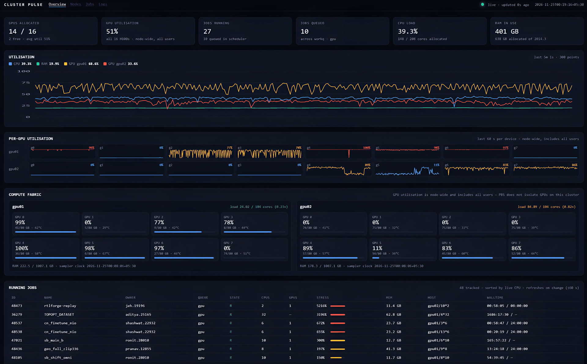
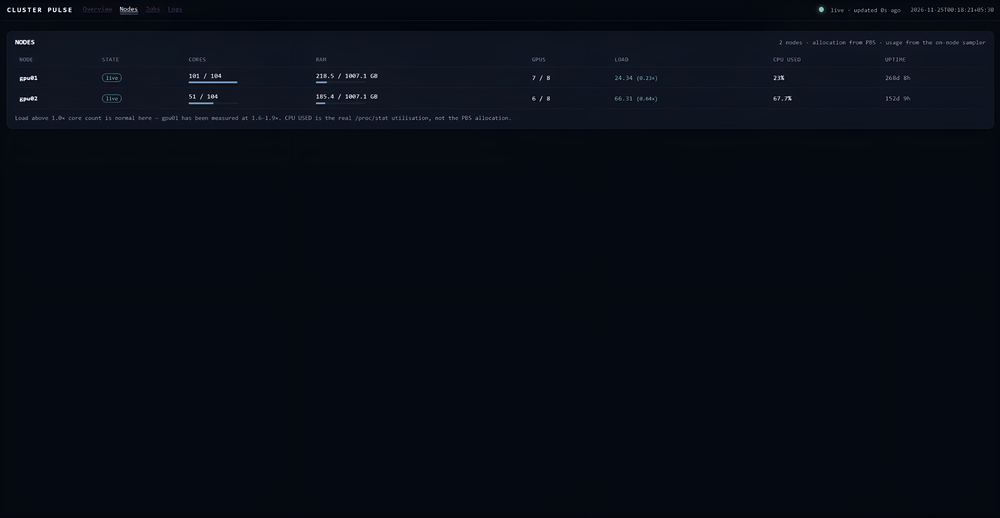
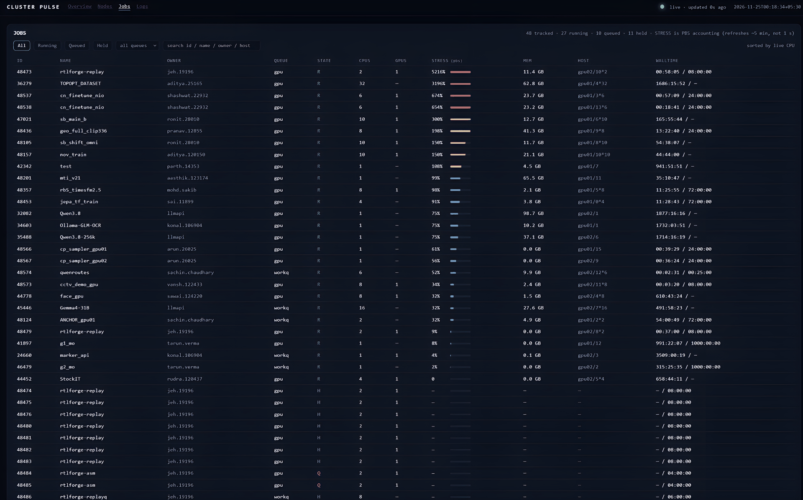
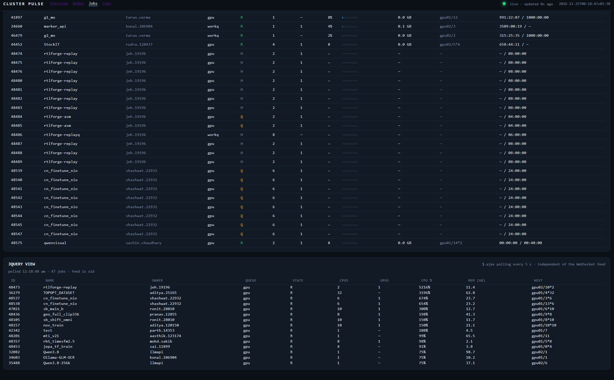
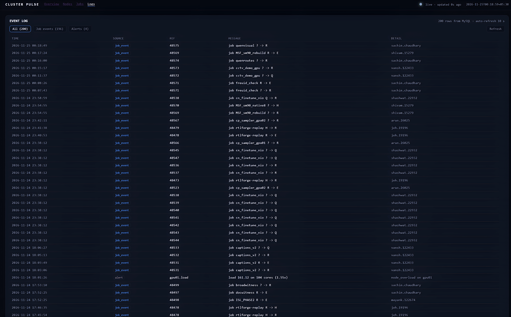

Cluster Pulse
a live picture of
a supercomputer
A monitoring pipeline for the university HPC cluster: 1 Hz sampling on the GPU nodes, a collector on the login node, a Node/Express API, MySQL for history, and an Angular dashboard. This page is the engineering record — what each file does, how the data moves, the numbers we measured, and the bugs that taught us the most.
00Watch it run
68 seconds of the live dashboard, recorded from the running system. Controls and audio are on — browsers block sound from playing before you interact, so press play.
01What it is, and what it is not
The cluster's own tools answer one question at a time — qstat, pbsnodes,
nvidia-smi. There is no single live picture: how loaded each node is, what every GPU
is doing right now, who is burning CPU, and what changed in the last hour. Cluster Pulse collects
that every second, stores it, and renders it.
It is not "real-time". Measured latency is ~1.2 s typical and ~3 s worst case, and ~1 s is a
physical floor because nvidia-smi itself averages GPU utilisation over a ~1 s window.
Sampling faster would repeat numbers, not produce fresher ones.
Two constraints shaped everything
- No agent on the login node, exposed.
mgmt01has no inbound reachability, and long-running work there breaks cluster policy. So nothing is installed beyond Python files and a crontab. - The link is unreliable. SSH handshakes drop roughly 1 in 3, and the VPN hands the laptop a new address on almost every reconnect. The design assumes the tunnel will die mid-flight.
02Languages and stack, and what each one is doing
Nine technologies. Each is here because a specific job demanded it, not because it was fashionable — the "why" column is the part a viva examiner will push on.
| Technology | Used in | What it does here — and why it |
|---|---|---|
| Python 3 stdlib only |
sampler.py collector.py |
Sampling and ETL. Chosen because the compute nodes cannot install packages reliably and every dependency is a failure mode on a shared filesystem — /proc, nvidia-smi, subprocess and json are enough. |
| Bash | sampler.pbs watchdog.sh pulse.sh start_collector.sh |
Anything the scheduler or cron runs. PBS jobs are shell scripts, and cron's environment differs from an interactive one — keeping this layer in Bash means no interpreter path surprises. |
| Node.js + Express | server/src/server.js | The ingest endpoint and REST API. Non-blocking I/O suits a server that receives one POST per second and fans it out to several WebSocket clients without queueing. |
| WebSocket ws |
/stream | Push instead of poll. The browser holds one socket and re-renders on message; there is no timer, so the UI cannot show stale numbers without also saying it is stale. |
| MySQL 8.4 | schema.sql db.js |
History and the SQL half of the subject. 1 Hz data is rolled up to 10 s on write: 8,640 rows a day instead of 86,400, and the live screen never waits on the database. |
| TypeScript + Angular | cluster-pulse/ | The dashboard. Standalone components, signals and OnPush — the WebSocket message lands, the signal changes, the view updates. TypeScript matters here because the wire format (snapshot, deltas, nulls) is subtle enough to get wrong silently. |
| jQuery | jquery-job-table.* | Deliberately the other approach: an independent $.ajax poll every 5 s that builds its table in the DOM and ignores the WebSocket. It exists because the syllabus asks for it, and it is a useful control — if the two views disagree, something is wrong. |
| PowerShell 5.1 | pulse.ps1 pulse.cmd |
Laptop-side control: status dots, start/stop/restart, log tail, and the VPN address sync over SSH. Native to Windows, so no runtime to install. |
| HTML / CSS | src/live.html styles.css |
A dependency-free fallback page at :3000/live plus the design tokens for the app. When the Angular dev server is down, the data is still readable. |
03The six pipelines, in the order data travels
"Pipeline" here means a stage with its own cadence and its own failure mode. Each one is a file you can point at in the viva.
Reads
/proc/stat (real CPU busy %), /proc/meminfo (real RAM), and two
nvidia-smi queries (8 GPUs: utilisation, memory, temperature, power; plus which
processes hold GPU memory and whose). Writes latest-<node>.json atomically —
temp file then rename, so a reader never sees half a file.
Merges both node files with scheduler state:
qstat -f and pbsnodes -av
cached for 5 s (they are the expensive calls). Slims the payload — the job list is only re-sent
when it changes, per-job usage travels as deltas, apps[] every 15 s.
If the POST fails, the snapshot is appended to a bounded buffer (50 MB) and drained later by a dedicated thread — never inside the 1 Hz tick. Past the bound the oldest half is dropped with a
{"type":"gap"} marker, so a long outage degrades visibly instead of silently.
Validates the payload, inherits the previous job list when
jobs: null, merges
per-job usage deltas into a Map, derives alerts (GPU ≥ 80 °C, load > 1.5× cores, queue ≥ 20),
then broadcasts to every WebSocket client. Out-of-order snapshots are rejected with
202 so a backfill can never become "current".
Rollups into
node_metric, gpu_metric, cluster_metric;
jobs upserted on change; state transitions into job_event; thresholds into
alert. Schema is created on boot and migrated with idempotent ALTERs.
Overview, Nodes, Jobs, Logs; a four-line utilisation chart, 16 per-GPU sparklines, and a header dot that says
live · updated Ns ago or stale. Plus the jQuery
polling table and the dependency-free /live page.
04Every file, and what it is for
Grouped by where it runs. The cluster side is three Python files, five shell scripts and a crontab — nothing installed, nothing listening.
A · hpc-pipeline/ — runs on the cluster
| File | Runs on | Purpose |
|---|---|---|
| sampler.py | gpu01, gpu02 | The 1 Hz node sampler. Per second: 8 GPUs, GPU processes and owners, load average, real CPU % from a /proc/stat delta, RAM from /proc/meminfo. Atomic write, daily append-only log, prunes logs older than 7 days. Commands run on daemon threads so a wedged nvidia-smi cannot freeze the loop. |
| sampler.pbs | submitted | The PBS wrapper: -q gpu, 24 h walltime, 1 CPU, 1 GB, and deliberately no #PBS -o — that directive silently lost its output file on this cluster once. |
| collector.py | mgmt01 | The ETL stage: merge, slim, POST, buffer. Re-reads post_url.txt every 5 s so a changed VPN address needs no restart. Backfill runs on its own thread. |
| watchdog.sh | mgmt01 | Judges sampler health by data progress, not by job state: if latest-<node>.json stops being rewritten for 180 s, kill the job and queue a fresh one. |
| pulse.sh | mgmt01 | Control panel: status (six green/red checks), start, stop, restart, logs, watch, plus a numbered menu. |
| start_collector.sh | mgmt01 | Idempotent starter — no-ops when a collector is already running, so cron can call it blindly. |
| post_url.txt | mgmt01 | The laptop endpoint. The single piece of configuration that changes when the VPN reconnects. |
| latest-<node>.json | mgmt01 | Newest sample per node — the source of truth for the collector. |
| latest-snapshot.json | mgmt01 | Newest merged snapshot, for local inspection. It is a delta document — jobs: null means "unchanged", not "empty". |
| metrics-<node>-YYYYMMDD.log | mgmt01 | 1 Hz append-only history (~24 MB/day/node). The only record of any window the API missed. |
| outbox.jsonl | mgmt01 | Bounded buffer while the laptop is unreachable. |
| collector.log | mgmt01 | Timestamped collector output — POST failures, backfills, target changes. |
B · server/ — the laptop API
| File | Purpose |
|---|---|
| src/server.js | Express + WebSocket. POST /api/ingest/cluster, GET /api/snapshot, /api/history[/nodes|/gpus], /api/jobs, /api/logs, /health, /live, WS /stream. Holds the latest snapshot in memory, merges deltas, derives alerts, writes rollups every 10 s. |
| src/db.js | MySQL pool, schema bootstrap, idempotent ALTERs, rollup writes and history queries. Fails soft: without MySQL the API still serves live data. |
| src/schema.sql | Six tables and one view — node_metric, gpu_metric, cluster_metric, job, job_event, alert, v_recent_cluster. |
| src/live.html | Dependency-free live page at :3000/live — what you open when the Angular dev server will not compile. |
| api_test.mjs | End-to-end test suite: ingest, WS push, alert thresholds, malformed payloads, 503 behaviour without MySQL. |
| .env.example | The shape of the config, with no secrets — real values live in .env, which is git-ignored. |
C · cluster-pulse/ — the Angular dashboard
| File | Purpose |
|---|---|
| core/models.ts | Interfaces for the wire format — NodeSample, GpuSample, Job, ClusterSnapshot. TypeScript is the guard against the delta contract being misread. |
| core/cluster-pulse.service.ts | Single source of live state: opens the WebSocket, reconnects with backoff, seeds history from MySQL on load, exposes computed signals (CPU used, RAM used, GPU average, job counts), tracks staleness. |
| overview/* | The main screen: KPI cards, alerts, per-node GPU fabric, the utilisation chart, 16 sparklines, running jobs sorted by CPU. |
| overview/usage-chart.* | SVG multi-line chart — cluster CPU, RAM and average GPU per node over a rolling window. |
| overview/gpu-sparklines.* | 16 tiles, one per GPU, 60 s of history each, coloured by threshold. |
| nodes/* | Per-node table: cores, RAM, GPUs, load ratio colouring, real CPU %, uptime. |
| jobs/* | Full job table with state/queue filters, search, and live stress bars. |
| jobs/jquery-job-table.* | The jQuery half of the syllabus — independent $.ajax poll every 5 s, DOM-built, WebSocket ignored on purpose. |
| logs/* | Event log from MySQL (job_event + alert) with source filters and a 10 s refresh. |
D · Laptop operations — project root
| File | Purpose |
|---|---|
| pulse.ps1 / pulse.cmd | Status (green/red dots for MySQL, API, feed, UI), start, stop, restart, logs, open, watch, sync. Also self-heals the VPN address: compares the laptop's current 10.22.x IP with post_url.txt on mgmt01 over SSH and rewrites it when it moved. |
| register-ip-sync.ps1 | Registers ClusterPulse-IPSync, a hidden scheduled task that runs the sync every minute, so a reconnect needs no manual step. |
| sql.cmd | MySQL console wrapper — reads the password from server/.env at runtime so it is never in the repo. |
| queries.sql | Seven ready-made demo queries for the MySQL part of the viva. |
| README.md | The front door: architecture, setup, limits. |
| LEARN-THE-PROJECT.md | The full engineering record — probes, measurements, bugs, and the investigations that turned out to be false alarms. |
05Numbers, and where each one comes from
Every figure below was read off a machine. Where something could not be measured, it says so instead of being estimated.
| Quantity | Value | How it was established |
|---|---|---|
| Nodes / cores / RAM | 2 / 208 / ~2.11 TB | pbsnodes -av and the collector's own totals. |
| GPUs | 16 × H100 80GB HBM3 | nvidia-smi inside a real job — node metadata gives counts, not models. 81,559 MiB usable per card. |
| Sampling cadence | 1.0 Hz per node | Metric log grew +30 lines in 30 s, twice, on both nodes. |
| Scheduler refresh | 5 s | Config, and verified as sufficient — qstat -f costs ~285 ms on this cluster. |
| Database writes | every 10 s | 8,640 rows/day instead of 86,400; the live screen never reads the DB. |
| End-to-end latency | ~1.2 s typ · ~3 s worst | Sum of stage costs; the floor is nvidia-smi's ~1 s averaging window. |
| Snapshot size | ~3.5 KB | Measured after slimming — the v1 payload was ~12 KB and filled the 50 MB buffer in 90 minutes. |
| Payload reduction | ~90% | Job list only on change (+60 s forced refresh), usage as deltas, rounded floats. |
| Clock skew, GPU nodes | ~11 min behind | Compare node_ts with date on mgmt01. Charts use ingest_ts for this reason. |
| SSH reliability | ≈1 in 3 drops | Measured over repeated attempts; resets arrive before the SSH banner, so it is the path, not sshd. |
06The dashboard
Five screens, from the running system. Click any image to enlarge.





07Bugs we actually hit
This is the section worth defending. Each of these shipped broken, produced a wrong answer, and was found by measuring rather than by reading code.
| Symptom | Root cause | Fix |
|---|---|---|
| Totals all zero, queues empty, while GPU data parsed fine | The collector's PATH lacked /opt/pbs/bin — cron's environment is not the interactive shell's. qstat simply was not found. |
Resolve PBS binaries by absolute path, with the bare name as fallback. |
| Job table always empty | Three causes stacked: jobs were sent only on change (so an API restart had nothing to inherit); a job payload arriving on a non-rollup tick was discarded; and qstat was missing from PATH. |
Force a full job refresh every 60 s; hold pendingJobs until the next rollup; absolute PBS path. |
| A duplicate sampler every 10 minutes | The watchdog grep never matched — qstat truncates job names to 10 characters, and qstat -f -u user ignores -f. |
Unique job names per node, and plain qstat -f matched on Job_Name. |
| Collector "freezes" for ~30 s, alive but silent | After an outage, drain() POSTed the entire 800-snapshot backlog in one tick. Later, draining inside the tick also throttled the live cadence to 0.4 Hz. |
Bound the drain (20 items / 2 s), then move it to a dedicated thread with a file lock. |
Dashboard showed two-hour-old values under live · updated 0s ago |
The tick posted the live snapshot then drained old ones, so the last thing the API received each tick was ancient. The header measured arrival time, not data age. | Post live last, and have the API reject any snapshot older than the current one (202). |
| Watchdogs never fired for three days; samplers died and stayed dead | The crontab had been installed from Windows with CRLF line endings. Cron parsed the schedule, ran the command with a trailing \r, and it failed silently. crontab -l looked perfect. |
Install from an LF-only file and verify with crontab -l | cat -A — no ^M. |
"Samplers have wedged" — both jobs R, files looked 11 minutes stale |
Not a bug: the GPU nodes' clocks run ~11 minutes behind mgmt01, so file mtimes always look stale from the login node. The log was growing at exactly 1 Hz the whole time. | Judge freshness by progress (does the mtime change?), never by age against another clock. |
| A whole conclusion was wrong: "qstat is the bottleneck" | Three timings of 15.17 / 10.37 / 5.32 s — descending, i.e. cache warming, taken while another PBS call ran cold. Re-measured: 0.093 s then 0.284–0.287 s steady. | The conclusion was withdrawn in the document rather than quietly edited, and the correction sits directly below the original claim. |
08Honest limits
- Not real-time. ~1.2 s typical, ~3 s worst case, ~1 s floor from
nvidia-smi. - GPU numbers are node-wide.
CUDA_VISIBLE_DEVICESis empty inside jobs — PBS does not isolate GPUs on this cluster, so a 1-GPU job sees all 8. There is no job → GPU mapping, and the UI says so rather than inventing one. - Job stress is PBS accounting, which refreshes every few minutes, not every second.
- Per-job usage reads as empty for up to 60 s after an API restart — the merge map lives in memory and refills on the first full tick.
latest-snapshot.jsonis a delta document.jobs: nullmeans unchanged; reading that file directly can show zero jobs at any instant.- MySQL has no retention policy yet — tables grow forever (~17k node rows/day).
- The laptop does not self-start. After a reboot, run
pulse start; the cluster keeps sampling and buffering meanwhile. - The VPN is not ours to fix. The Sophos gateway resets the session and hands out a new address; the pipeline survives it, it does not prevent it.
- Two subjects are not built: the MongoDB half and the ESP32/IoT node.
09Viva questions, answered
The questions an examiner is most likely to ask, with the answer that is actually true rather than the one that sounds best.
Why not just poll the cluster from the browser?
Two reasons. The login node has no inbound reachability, so a browser cannot reach it; and qstat -f plus pbsnodes are expensive enough that polling them per viewer does not scale. The collector reads the scheduler once per 5 s and fans the result out.
Why do the compute nodes not POST directly to the laptop?
They cannot. They sit on 10.17.1.0/24 with no route to the laptop's 10.22.x VPN address — measured, curl exits 7. Only mgmt01 can reach the laptop (HTTP 200). So the nodes write files to shared Lustre and the login node does all the network talking.
Why store 1 Hz data at 10 s granularity?
Because the live screen does not need the database at all — it renders from the WebSocket. The DB exists for history, and 10 s rollups keep a day at 8,640 rows instead of 86,400. The raw 1 Hz logs stay on the cluster, so nothing is truly lost.
What happens if the laptop is switched off for a day?
The collector keeps sampling and buffers to outbox.jsonl. The buffer is bounded at 50 MB; past that the oldest half is dropped with a gap marker, so a long outage degrades visibly instead of silently. When the laptop returns, the backlog drains on a background thread and the live cadence is unaffected.
Why is there both an Angular table and a jQuery table?
The syllabus asks for both, and honestly they serve different purposes. Angular is the real dashboard: WebSocket push, signals, typed models. The jQuery table polls /api/jobs every 5 s and rebuilds the DOM. If the two ever disagree, one of the two paths is broken — it has already been a useful control.
How do you know the numbers are real and not mocked?
Three independent checks. Cross-node: a stress job on gpu01 moves gpu01's GPU tiles and leaves gpu02 flat. Against the scheduler: totals match pbsnodes, job counts match qstat. Against time: the snapshot's ingest_ts tracks the wall clock, and the metric logs grow at exactly 30 lines per 30 s.
What is the actual latency, and why not lower?
~1.2 s typical, ~3 s worst. The chain is sampler 1.0 s + Lustre visibility <1 s + collector tick ≤1.0 s + WebSocket 50–150 ms + paint ~1 s. The floor is about 1 s because nvidia-smi averages utilisation over a ~1 s window — sampling faster would return the same reading, not a newer one.
You do not have per-job GPU data. Why not?
PBS does not isolate GPUs on this cluster. CUDA_VISIBLE_DEVICES is empty inside a job, so a job that requests one GPU can still see all eight. Any per-job GPU number would be a guess, so the dashboard states that GPU figures are node-wide and refuses to attribute them.
What was the hardest bug?
The crontab with CRLF endings. Every watchdog was silently failing for three days while crontab -l looked correct, and the symptom — samplers dead, buffer growing — looked like a network problem. The second-hardest was the ordering bug where the collector posted live data and then drained old data, making the dashboard show two-hour-old numbers under a header that said "live".
What would you change if you started again?
Two things. First, put any slow work on a thread from day one — three separate incidents came from doing network I/O inside the 1 Hz tick. Second, keep the payload a complete document instead of deltas: the bandwidth saving was real, but the delta contract cost us two confusing bugs and a great deal of explanation.
10Credits
Built by Ar1220 on the UPES HPC cluster, working with two Hermes agents — one on the laptop, one on the login node — with work relayed between them by hand.
- Ar1220 — project owner: the idea, the cluster access, every deployment decision, and the calls on what was honest enough to ship.
- Fang Yan (laptop side) — pipeline design,
sampler.pyandcollector.py, the Node/WebSocket API, the MySQL schema, the Angular dashboard, the control scripts, and both documents. - Zeng Niu's agent (cluster side) — the HPC-side build and verification sweeps on mgmt01: PBS probing, deployment, and the accuracy review that corrected six claims in the engineering record.